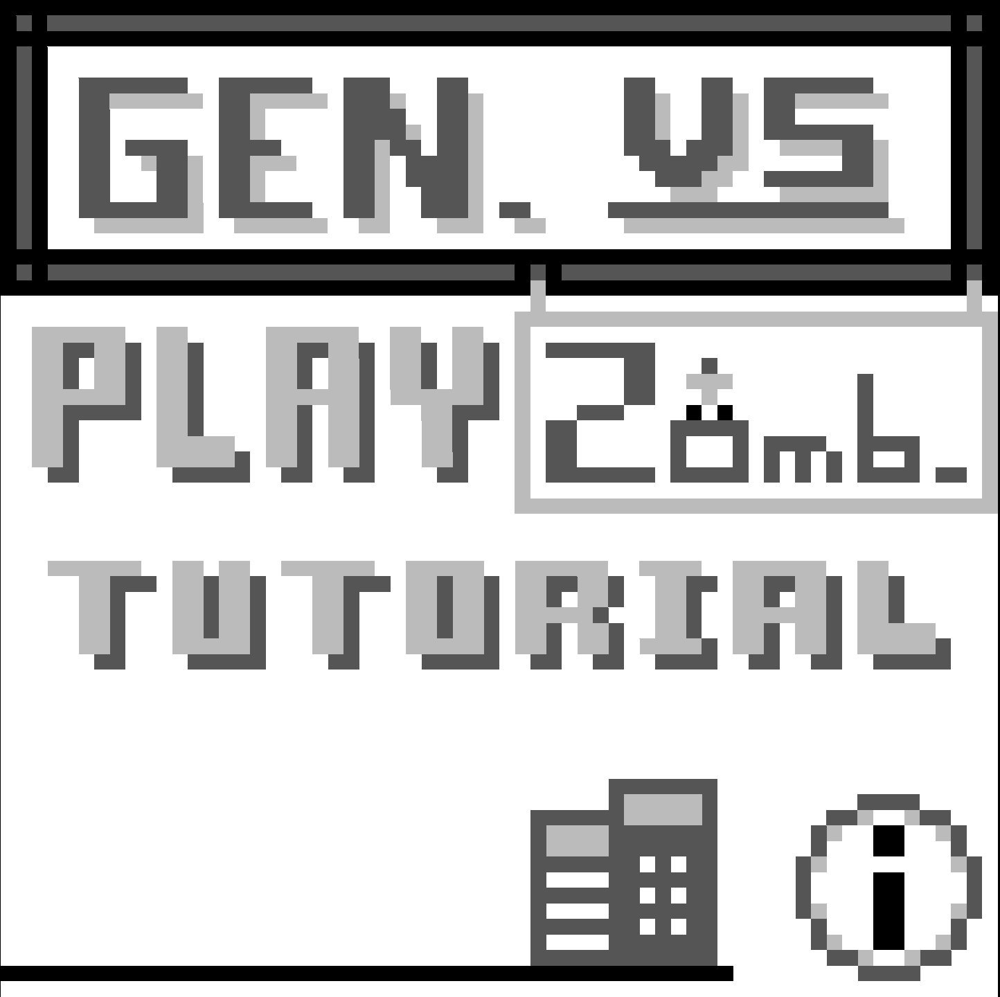
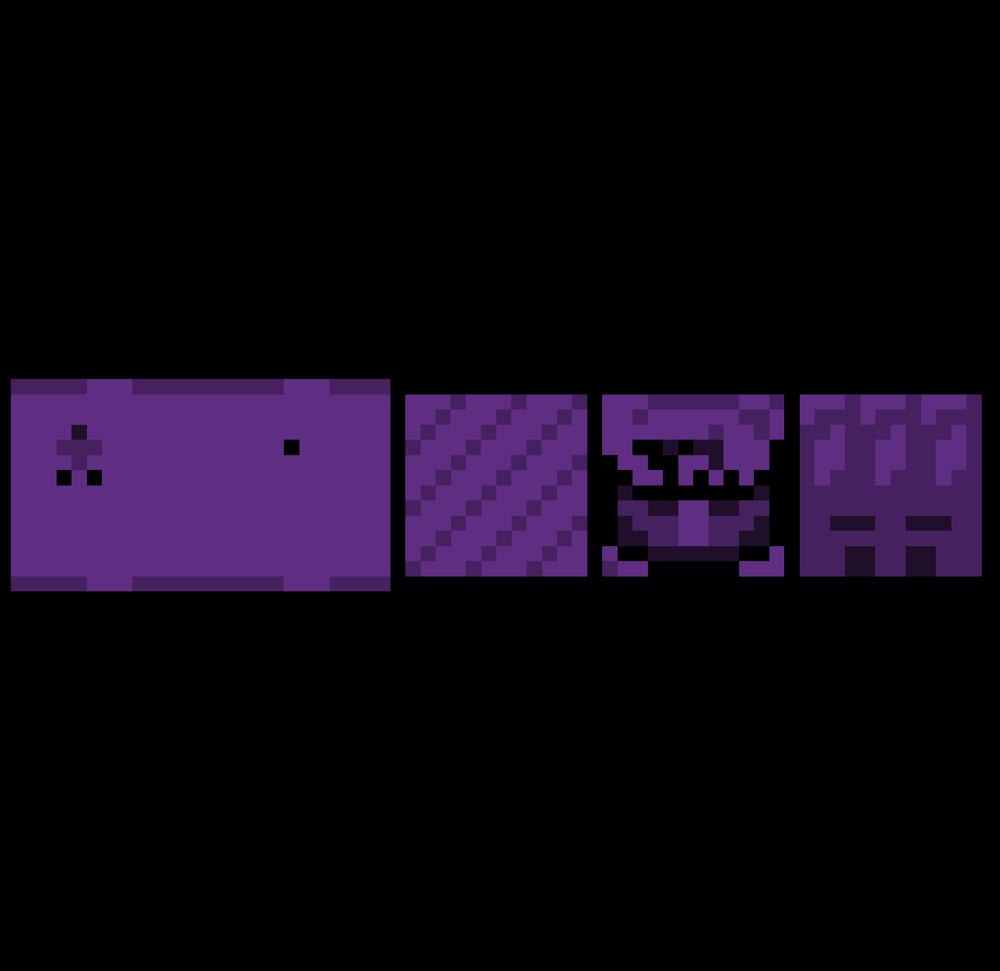
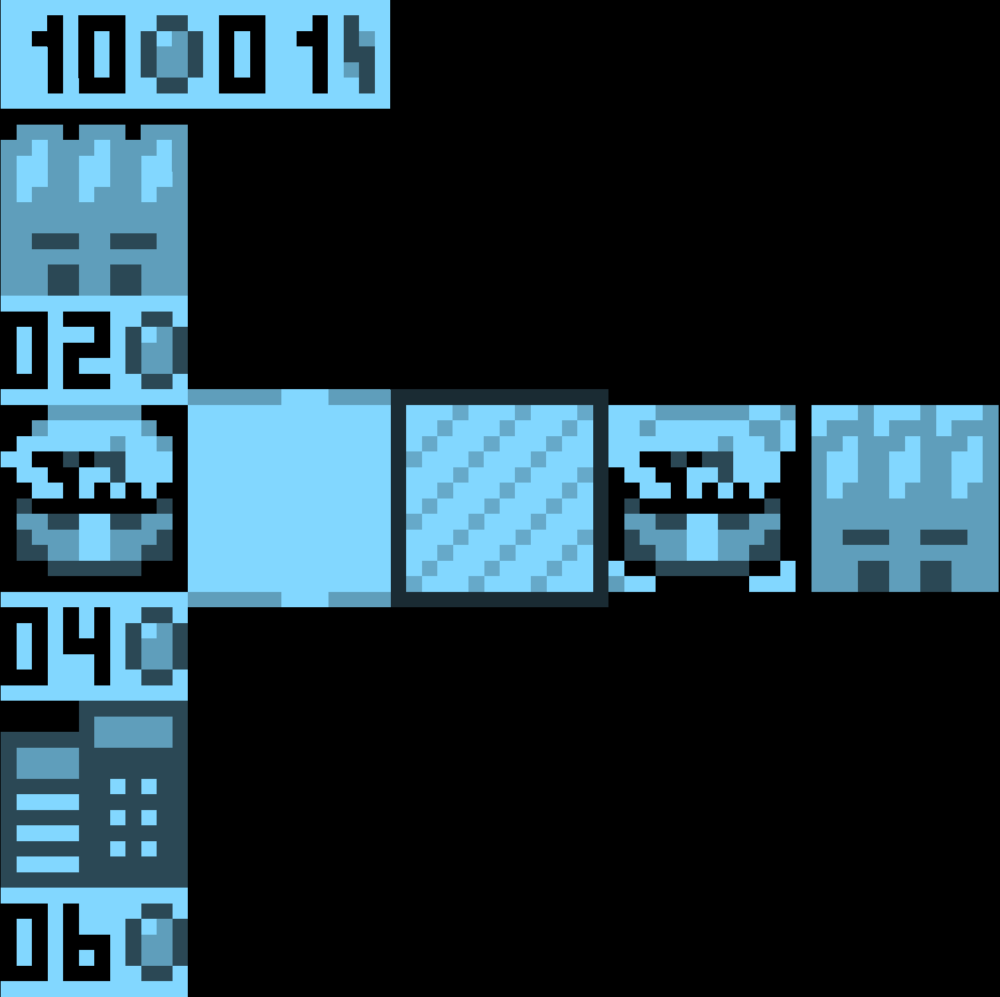
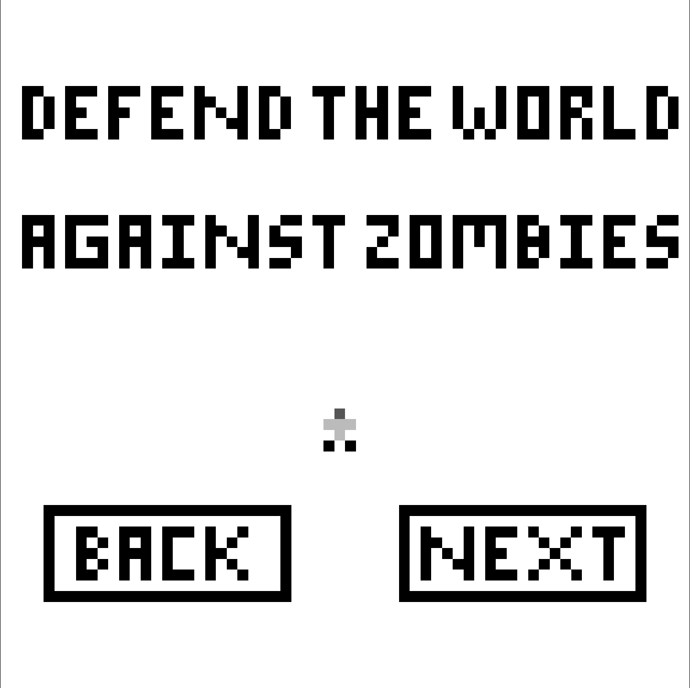

About the game
A game made for the LOWREZJAM where we had a 64x64 resolution limit.
We were 2 to make the game and used Godot.
Survive waves of zombies using towers to defend yourself, laboratories to cure zombies and generators to provide energy to it all.
My Contributions
I mainly worked on integrating the different types of buildings, with each ones having different functionalities.
I also worked on zombies, making their simple AI and different ones.
Finally, I did other minor tasks (in jam context) like the tutorial screens.
Gallery



